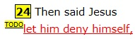

TODO:Bible
Read it. Believe it.
Do it!
But be ye doers of the word,
and not hearers only,
deceiving your own selves.
Be encouraged. God has a purpose for your life!
Read The Bible
Read the King James Bible with the words of Jesus in red.
Quickly navigate to any chapter using the Bible Index Page.
Find links to ToDo items and articles within the bible text.
Bible ToDo List

A Bible ToDo List reminding us what God's Word tells us to do.
The ToDo list is indexed by topic, by A-Z and by bible book.
Items include the scriptures that inspired them and some words of encouragement and prayer.
Each item also challenges the reader and offers practical tips.